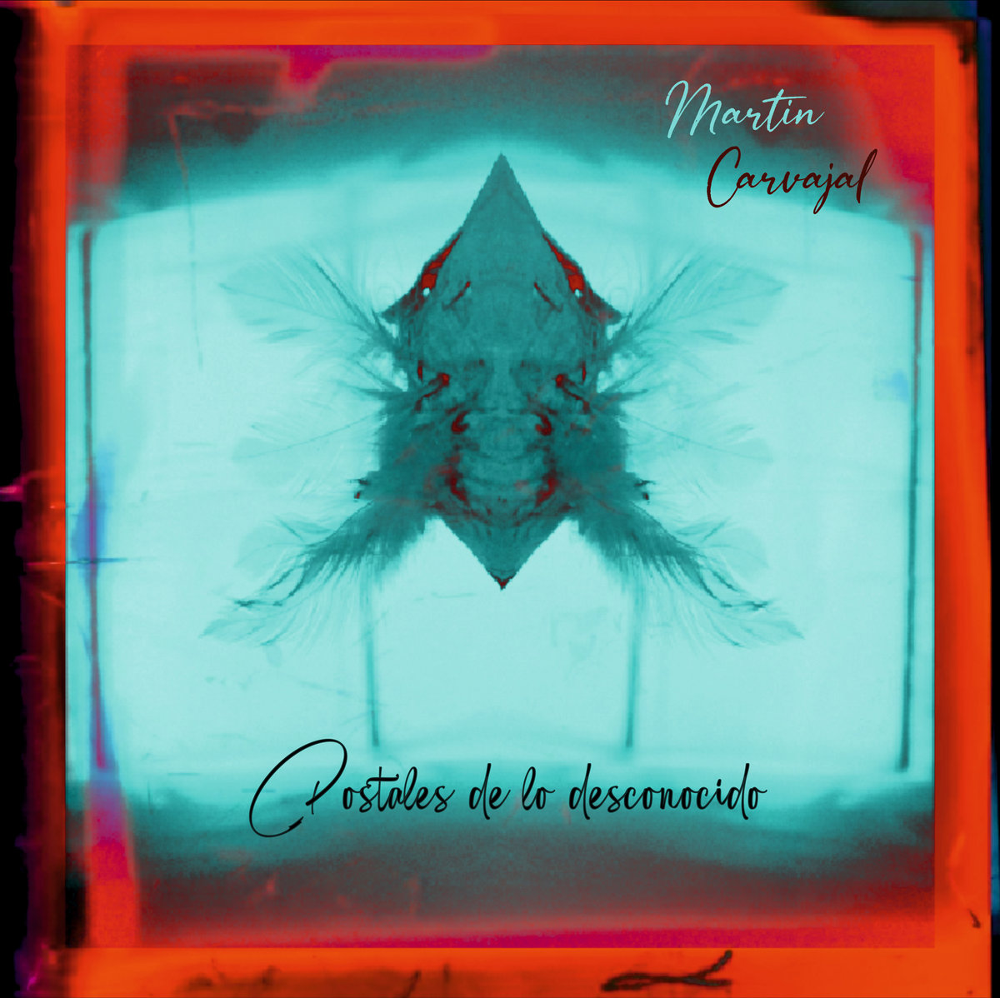
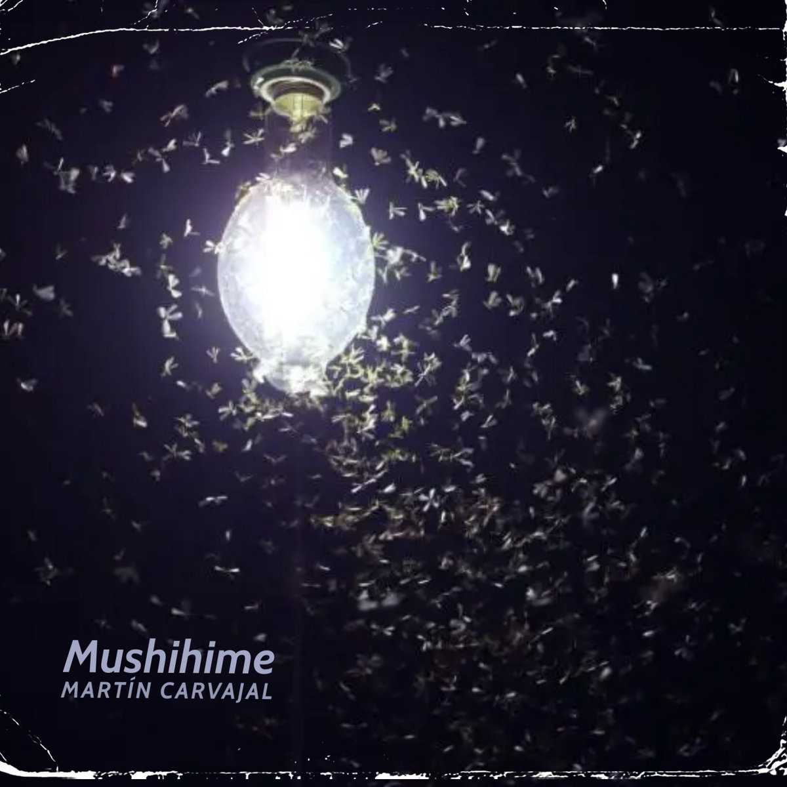
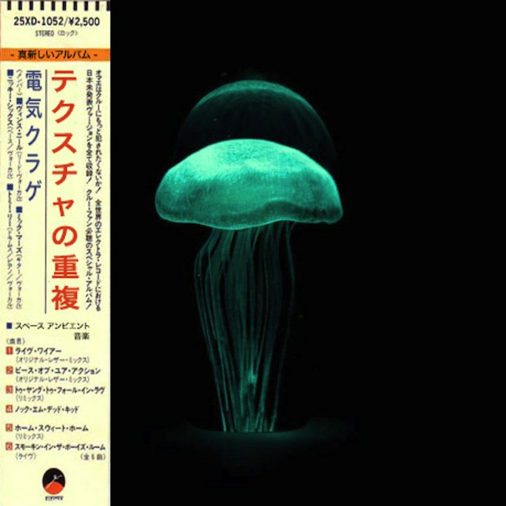
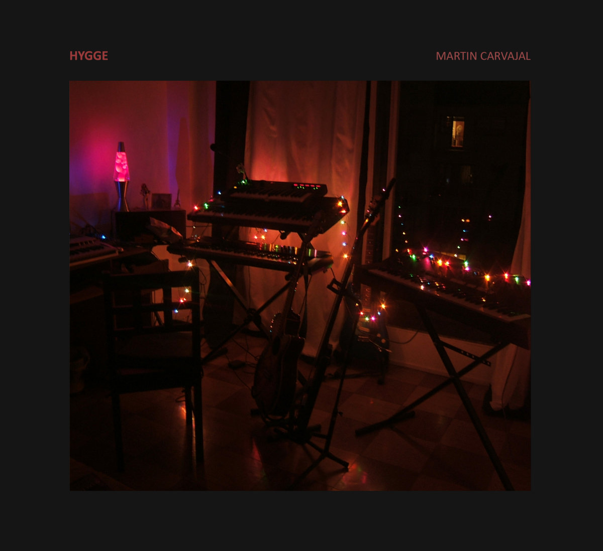
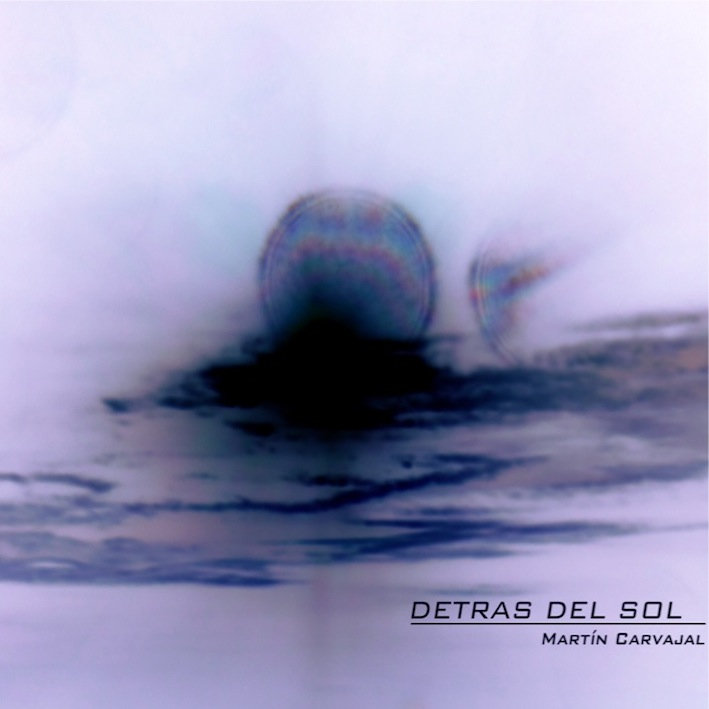

Biografía
Nacido en Rosario, provincia de Santa Fe, es un compositor que ha cursado la carrera de Lic. en Composición Musical en la Facultad de Artes de la Universidad Nacional de Córdoba.
Su interés por la producción artística con medios electrónicos y digitales lo ha llevado a investigar las posibilidades de las nuevas tecnologías aplicadas a la composición musical, la manipulación del sonido y la creación de obras audiovisuales a través del gesto, el diseño sonoro y la producción de obras en sistemas multicanal.
Investigación y Docencia
Durante su cursado, Martín se ha desempeñado como ayudante alumno en la cátedra de Técnicas y Materiales Electroacústicos y ha formado parte del Grupo de investigación G.I.E.M., ambas a cargo del Dr. Sergio Poblete.
También ha sido parte activa del proyecto CePIA Abierto "Electroespacio Acústico" junto a Basilio Del Boca, Gustavo Alcaraz y Federico Ragessi.
Proyección Internacional
Su última composición electroacústica "Mushihime", para sistema cuadrafónico, fue seleccionada para representar a Argentina en el 30th Art Audio Festival (noviembre de 2022) en la ciudad de Cracovia, Polonia.
Además, sus obras han sido expuestas en festivales de gran relevancia en países como Portugal, México, Ecuador, Suiza y en diferentes ciudades de Argentina.
Producción Artística
Martín ha compuesto y estrenado obras para diversas agrupaciones instrumentales, así como música con técnica mixta y obras electroacústicas en formato multicanal, presentadas en diversos espacios de la ciudad de Córdoba y Buenos Aires. En septiembre del 2022 presentó una obra experimental en formato cuadrafónico de manipulación del sonido a través del gesto en el marco del festival "Experimentalia" en el Centro Cultural España Córdoba.
Proyectos Recientes y Futuros
-
2025
Composición de la música para la obra de teatro "Luz al Tiempo", estrenada en abril de ese mismo año en el teatro Quinto Deva. También se ha desempeñado como gestor y organizador del ciclo de música electroacústica "Jornadas de Música Acusmática" pertenecientes al LEIM de la Facultad de Artes de la UNC y que se realizaron en los meses de Junio y Octubre en el Museo de la Universidad Nacional de Córdoba.
-
2026
Actualmente se encuentra componiendo la música que acompañará a la nueva obra del elenco de danza contemporánea Andanzas y que se estrenará en Agosto del 2026.
Discografía
Haz clic sobre las carátulas para escuchar los trabajos en Bandcamp:

Memorias

Postales de lo Desconocido

Mushihime

テ ク ス チ ャ の 重 複

Hygge
